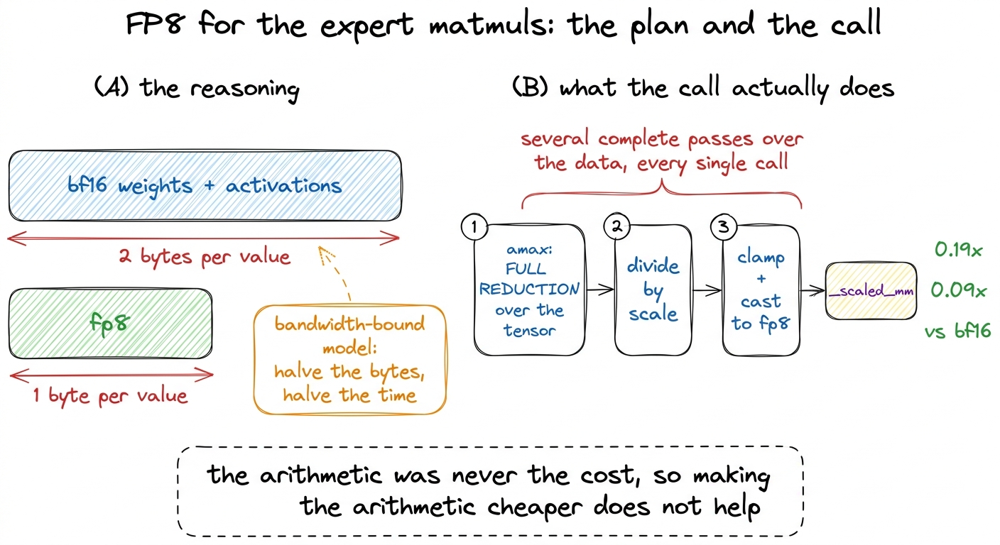
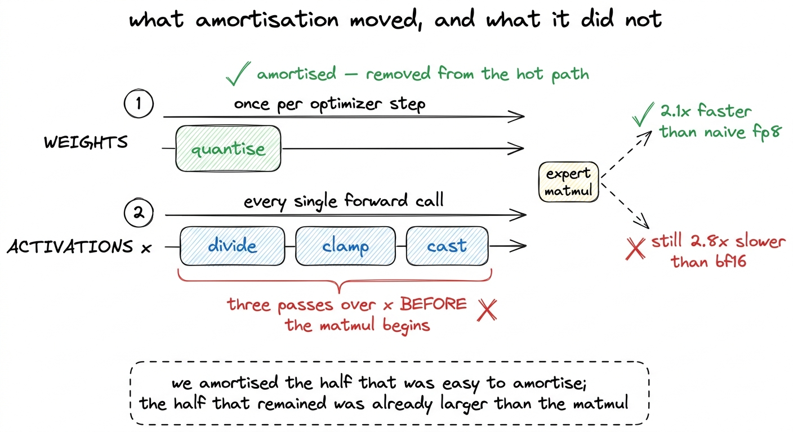
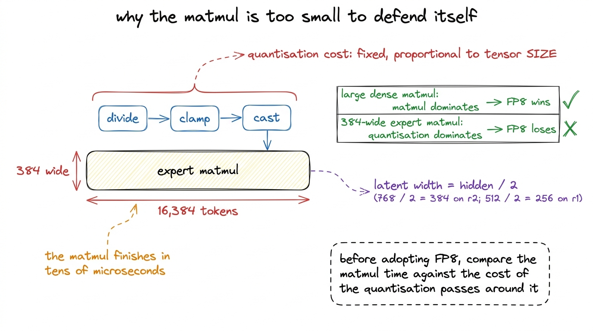
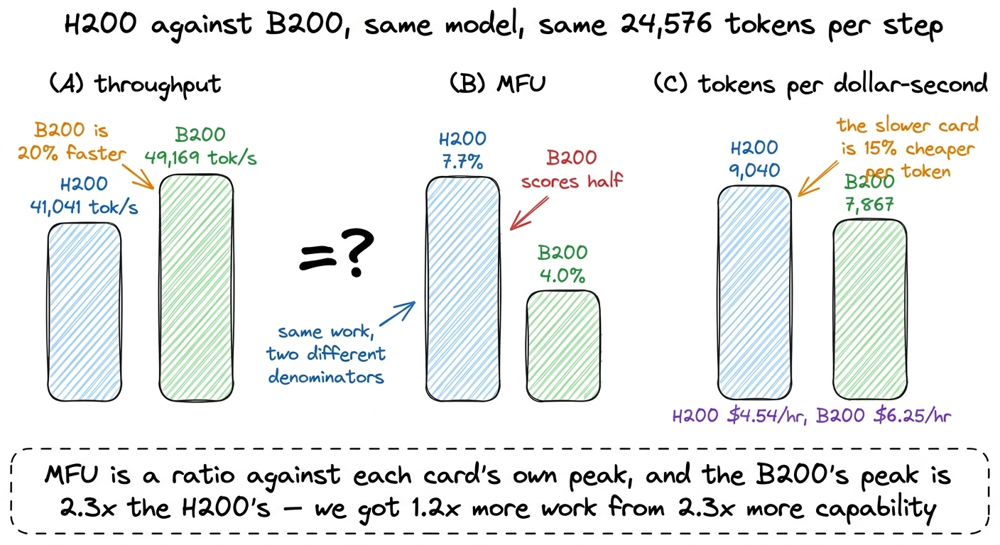
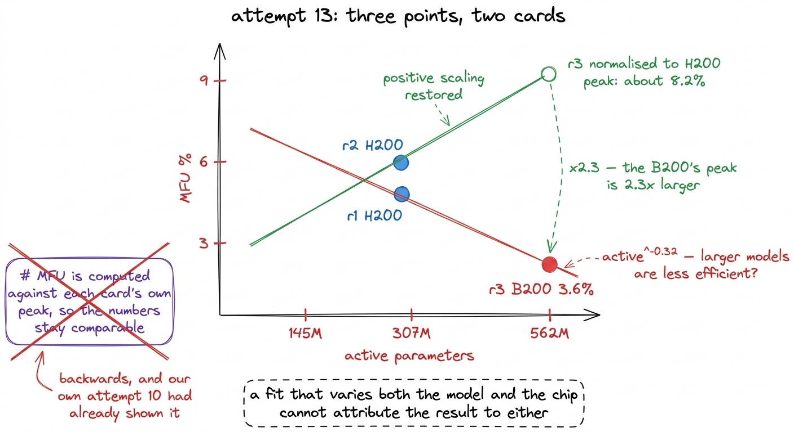

FP8, and the bigger GPU that scored worse
Two attempts at FP8, four to eleven times slower than the format it replaces, and a B200 that is 20% faster in absolute throughput at roughly half the MFU. Both results are real, and both are about ratios.
The profile in the previous chapter left us pointed at a specific resource. Only about 12% of GPU time was arithmetic and 41.9% was elementwise work that moves data without computing much, so the quantity to economise is bytes crossing the memory bus rather than floating-point operations. Two ideas follow directly from that. Use a smaller number format, so every byte moved carries the same information in half the space. Or rent a card with more bandwidth and more memory, so the bytes move faster and more of them fit.
We tried both. Neither worked, and the two failures have the same shape. Each is a question about a ratio, and in each case the quantity we had reasoned about is the one on top, while the quantity that decided the outcome sits underneath it.
This chapter covers attempts 11 and 15, FP8 tried naively and then the way production systems do it, and attempt 10, a Blackwell B200 standing in for an H200. It closes with attempt 13, an invalid measurement that attempt 10 had already made it possible to catch, and that we did not catch until a fitted exponent changed sign.
All of it was measured on r2, the 307M-active rung above the one this book is about, on a single H200 unless a B200 is named. None of these results came from r1's own run.
FP8, taken at face value
FP8 is an eight-bit floating-point format with tensor-core support on both Hopper and Blackwell, and against bfloat16 it halves the bytes for every weight and every activation it touches. The expert weights hold most of a mixture-of-experts model's parameters and every token reads six of them, so the expert matmuls looked like the largest single saving available. PyTorch exposes the operation directly as torch._scaled_mm.
The complication is range. FP8 carries roughly two decimal digits, so a tensor has to be scaled into the format's usable band before the matmul and scaled back after it. The straightforward implementation reads:
sx = x.abs().amax() / 448.0 # 448 is the max of float8_e4m3fn
xq = (x / sx).to(torch.float8_e4m3fn)
y = torch._scaled_mm(xq, wq.t(), scale_a=sx, scale_b=sw, out_dtype=x.dtype)Three lines, one of them a library call, and every one of them correct.1 float8_e4m3fn is four exponent bits and three mantissa bits, with no infinities, which is why its maximum representable value is 448 rather than a power of two. The alternative FP8 type, e5m2, trades mantissa for range and is normally used for gradients rather than activations. We only measured e4m3fn, because a format that cannot represent the forward pass accurately does not need a backward-pass measurement.
We benchmarked it at the shapes our expert layers actually use, rather than at a square shape chosen to look good, and the result was uniform across all of them. FP8 ran at between 0.19x and 0.09x of bfloat16's speed, which is to say it was several times slower than the format it was replacing, and it was about five times less accurate on the same shapes.

figure rendering · The reasoning behind FP8 and the operation the naive implementation acWhy it was slower
The arithmetic is not the cost, which is the sentence the profile chapter ended on, arriving here in a different costume.
Each call computes amax, a full reduction over the entire tensor, then divides by the resulting scalar, clamps and casts. That is several complete passes over the data before the matmul is allowed to start. Our expert matmuls in bfloat16 are small enough to finish in tens of microseconds, and a handful of extra passes over a tensor of that size costs more than the matmul does, so the total is larger however efficient the matmul that follows turns out to be.
The accuracy result has a separate cause. Per-tensor scaling means one scalar governs the whole tensor, so a single outlier value sets the scale and everything else is compressed into whatever dynamic range is left.2 Per-block or per-row scaling fixes this by giving each row or each tile of the tensor its own scale factor, which is what production FP8 implementations do. We did not implement it, because by the time the accuracy problem mattered the speed result had already ruled the approach out at these shapes. The accuracy figure is recorded here so that nobody reads 0.19x as the only objection. That is why the relative error is five times bfloat16's rather than the two or three times a bit-count argument would predict.
The naive result is therefore not evidence that FP8 does not work. It is evidence that FP8 applied as a dtype change at the call site is a scaling subsystem in a dtype's clothing, and that the subsystem costs more than the format saves.
FP8 the way production does it
Attempt 15 implemented the three things production FP8 does differently, all of which are about doing work once instead of doing it every time.
Persistent quantised weights. Weights change once per optimizer step, not once per forward pass. Quantising them after the step and reusing the result removes an entire reduction, division and cast from every call, and the saving grows with the number of forward passes each optimizer step contains.
Delayed scaling. Instead of reducing over the activation tensor to find its maximum, keep a running maximum from previous steps and update it once per step, outside the hot path. The scale is then slightly stale, which is the design's accepted cost, and no reduction sits on the critical path.
Keeping scale application out of the reduction path, so the matmul receives inputs that are already scaled and the two operations do not serialise against each other.
All three were implemented and measured on the same shapes as the naive version. Amortising made FP8 2.1x better than the naive version, which is what it was supposed to do and confirms that the three changes address a real cost. FP8 remained 2.8x slower than bfloat16.

figure rendering · Attempt 15. Persistent quantised weights and delayed scaling remove thThe remaining gap is structural rather than a matter of tuning. We amortised the weight quantisation, and every call still quantises the activations, which means dividing, clamping and casting: three passes over x before the matmul begins. The matmul those passes serve is itself a matter of tens of microseconds. Three passes over the input cannot be made cheaper than that, so the sum cannot come out below bfloat16's number.
The shape that decides it
There is a specific architectural reason these matmuls are small, and it is one of the features that makes K3 a K3.
The latent mixture of experts routes tokens through a bottleneck at half the hidden size before they reach an expert. In r1 that latent width is 256, half of hidden 512. On r2, where these measurements were taken, hidden is 768 and the latent width is 384, and that 384 is the inner dimension of the expert matmuls we benchmarked. An expert matmul in this architecture is 384 wide, and a matmul that narrow, even over a microbatch of 16,384 tokens, finishes in tens of microseconds.

figure rendering · The latent bottleneck that makes the architecture cheap per token is tFP8 pays off when the matmul dominates the quantisation surrounding it, which is true of the large dense matmuls inside a large model and is not true here. Making it win at these shapes means fusing the activation quantisation into the kernel that produces the activations, so that no separate pass over the data exists at all. In practice that means writing the entire expert forward as one Triton kernel rather than calling torch._scaled_mm, and as the chapter on the two kernels that worked showed, a single fused kernel is already a substantial piece of work.
The transferable rule is a comparison anyone can make before writing a line of quantisation code. Time the matmul, then estimate the passes over the data the quantisation requires. If the matmul is measured in tens of microseconds, the quantisation dominates no matter how carefully it is written.
A bigger GPU
Attempt 10 changed the hardware instead of the code, which is a clean experiment: it separates our implementation's limits from the machine's.
The reasoning was that the ceiling had twice turned out to be memory rather than speed. The fused situ kernel of attempt 8 won 1.38x purely by freeing 40 GB, which allowed a 50% larger microbatch, and the dispatch cleanup of attempt 9 made each step 13% faster while leaving peak MFU unchanged, because no larger batch would fit. A B200 carries 180 GB and a higher peak than an H200, so it was the obvious card to try.
We ran r2 at 24,576 tokens per step on both cards:
| gpu | tokens per step | tokens/s | MFU |
|---|---|---|---|
| H200 | 24,576 | 41,041 | 7.7% |
| B200 | 24,576 | 49,169 | 4.0% |
The B200 is 20% faster in absolute throughput and scores roughly half the MFU. Both numbers are correct, and the first time you read them together they do not look like they can be.

figure rendering · All three panels describe the same pair of runs. Which card looks bettThey can, because MFU is a ratio and the denominator changed. MFU divides the useful arithmetic by the card's own peak, and the B200's peak is 2.3 times the H200's. We extracted 1.2 times more work from 2.3 times more capability, so a larger share of the machine sat idle and the percentage fell while the wall clock improved.
It is worth writing the definition out at this point, because the whole confusion lives in it. We compute MFU = 6 x active_parameters x tokens_per_second / peak_FLOPs, where the H200's bf16 peak is taken as roughly 989 TFLOP/s. The numerator belongs to the model and the run, and the denominator belongs to the card alone. Move to a card with a larger peak without moving the numerator by as much, and the ratio falls even though every quantity we care about improved. Well-tuned dense training reaches 40 to 55% on this measure, and mixture-of-experts runs score lower, so a number in the single digits is not by itself the alarming reading it appears to be.
This holds for every utilisation metric and not only this one. MFU is a ratio, so a faster GPU can lower it. Comparing MFU across different hardware measures how well each chip is being used, not which chip finishes sooner.
For a hardware decision the useful figure is tokens per dollar-second, which has money in the denominator instead of FLOPs. At $4.54 per hour the H200 delivers 9,040 tokens per dollar-second and at $6.25 per hour the B200 delivers 7,867. The slower card is 15% more cost-efficient, so moving to the bigger GPU would have made the headline MFU look worse and cost more per token at the same time.3 Memory is the other quantity that does not behave the way raw capacity predicts. In attempt 8 the 40 GB freed by a fused kernel bought a 50% larger microbatch and a 1.38x gain, so a memory saving turned into a throughput gain by a route that had nothing to do with bandwidth. The chapter on the silent fallback shows the opposite case, where peak memory stops responding to batch size at all.
The fit that flipped sign
Attempt 13 is where these two results meet, and it is the one worth reading twice.
Our estimate of the flagship's MFU rested on fitting throughput against active parameters across two rungs, r1 at 145M and r2 at 307M, both on an H200. That fit gives active^0.35 and extrapolates to 12.5%. A two-point power law is weak evidence for a number about to price a training run, so a third point was worth having. Rung r3 does not fit on an H200 at a useful batch size, so we ran it on a B200 and refitted all three.
The result was active^-0.32. A negative exponent implies that larger models are systematically less efficient than smaller ones, which would have turned the flagship's projected cost the wrong way and made the whole ladder look like a poor bet.
Nothing crashed. The regression was implemented correctly, the arithmetic was right, and the number looked like the sort of disappointing result a careful measurement sometimes returns.

figure rendering · The invalid fit and its correction. The B200 point carries a systematiIt is an artefact. Attempt 10 had already established that a B200 scores roughly half the MFU of an H200 for the same work, so mixing the two cards in a fit meant to isolate model size put a systematic offset of a factor of two into one of the three points. Normalising r3's 3.6% to the H200's peak gives about 8.2%, which sits above r2 and restores the positive scaling the two-point fit had found.
Two details about how this was caught matter more than the corrected number.
The first is that the code carried a comment asserting that MFU computed against each card's own peak keeps the numbers comparable across cards. That is exactly backwards, and our own measurement two attempts earlier had already demonstrated it. A comment written while implementing a measurement records what its author believed at that moment, and it can contradict a result the same project has already produced.
The second is that nothing about the run flagged it. There was no crash, no warning and no implausible magnitude. The only thing that caught it was noticing that the fitted exponent had changed sign between two runs of the same analysis, and asking why. A measurement can be implemented correctly and still measure the wrong quantity, and the failure mode of the wrong quantity is a plausible number.4 This is the same class of error as the router entropy in the chapter on expert collapse, where a correctly implemented metric read 0.99 while 94.5% of experts were dead. In both cases the code was right, the quantity was wrong, and the check that caught it was a comparison against a second measurement rather than a closer reading of the code.
What the three attempts share
FP8 was reasoned about as bytes per value, which it does halve. What decided it was the ratio of the matmul to the fixed cost of the passes that produce those bytes, and that cost does not shrink when the values do. Amortisation moved half of it out of the hot path and the half that remained was already larger than the matmul.
The bigger GPU was reasoned about as bandwidth, memory and throughput, all of which improved. What changed the headline was the denominator, the card's own peak, which grew faster than our ability to use it.
The invalid fit was a denominator error made twice, once in the measurement and once in the comment explaining why the measurement was fine.
None of the three needed a new kernel or a subtle bug to go wrong. Each needed only that a ratio be read without checking what it divides by. The practical defence is to keep an absolute number beside every percentage. Throughput in tokens per second and cost in tokens per dollar-second are not measured against a moving reference, and in all three attempts they told the correct story while the percentage did not.
The next chapter is where a measurement finally does point at something real. A throughput curve that moves up and down as the batch grows, and a peak memory figure that does not move at all, are two shapes no scaling story produces, and together they exposed a dispatch path quietly reverting to the loop it had been written to replace.